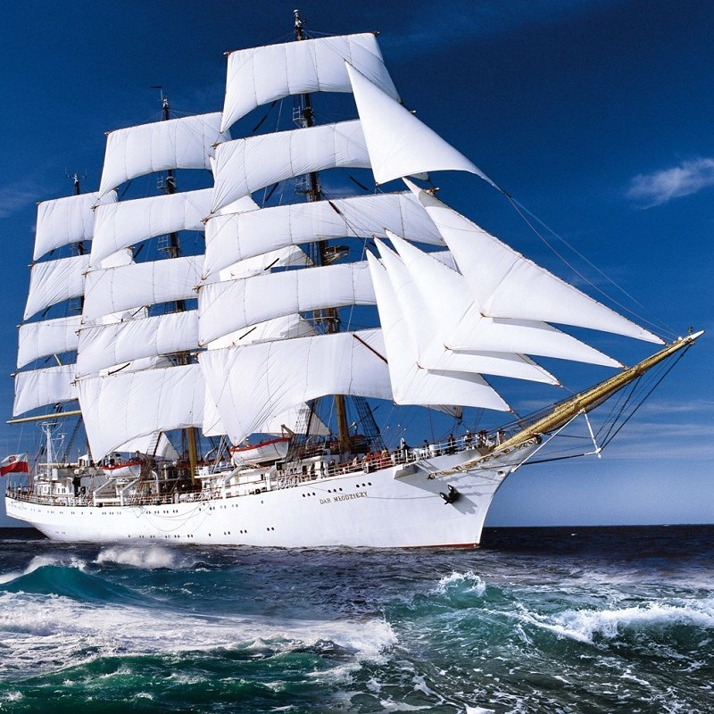

Szkolenie na morzu
Dar Młodzieży to trzymasztowy polski żaglowiec szkolny (fregata) typu B-95, Uniwersytetu Morskiego w Gdyni, następca „Lwowa” i „Daru Pomorza”. Głównym konstruktorem nowego żaglowca został inżynier Zygmunt Choreń. Doradzali mu doświadczeni kapitanowie „Daru Pomorza” Tadeusz Olechnowicz i Kazimierz Jurkiewicz.
Społeczne składki nie były jednak wystarczające na pokrycie kosztów budowy. Koszt budowy miał wynosić 300 milionów zł, ostatecznie w 1982 roku podsumowano go na 541,3 mln zł (według cen z 1980) – równowartość ok. 4 mln dolarów USA.10 lipca 1982 roku „Dar Młodzieży” wypłynął w dziewiczy rejs pod dowództwem kpt. Olechnowicza. Po wielodniowych ćwiczeniach wystartował do regat z brytyjskiego Falmouth do Lizbony.
Na Atlantyku nad ranem 27 lipca, załoga zauważyła czerwone rakiety wzywające pomocy. Wkrótce odnaleziono niemiecki jacht "Peter von Danzig", na którym jeden z żeglarzy doznał obrażeń w wyniku pożaru. Podjęto poparzonego na pokład „Daru Młodzieży”, gdzie opatrywał go lekarz okrętowy S. Baranowicz. Po zabraniu poszkodowanego przez helikopter do szpitala, „Dar Młodzieży” ze stratą ponad 4 godzin włączył się ponownie do wyścigu. Brawurowo finiszował i pierwszy przekroczył linię mety, wyprzedzając o 14 minut i 18 sekund niemiecki bark „Gorch Fock”.
Łącznie do końca roku 2006 „Dar Młodzieży” odbył 125 podróży szkoleniowych, odwiedzając 357 portów Europy, Azji, Australii i obu Ameryk, przepłynął ponad 388 tys. Mm. Przeszkolił 12 024 studentów morskich uczelni z Gdyni i Szczecina, średnich szkół morskich oraz zagranicznych uczelni morskich, m.in. Regional Maritime University w Akrze. Brał udział w regatach Tall Ships' Races: 1982, 1984, 1986, 1995-1996, 2001-2009.
Z okazji 100. rocznicy odzyskania przez Polskę niepodległości zorganizowano specjalny rejs dookoła świata. Organizatorami rejsu były: Ministerstwo Gospodarki Morskiej i Żeglugi Śródlądowej, Uniwersytet Morski w Gdyni oraz Pallotyńska Fundacja Misyjna Salvatti. W rejsie wzięło udział 1000 młodych osób podzielonych na 6 zmian (studenci szkół morskich z Gdyni i Szczecina oraz laureaci konkursu). Żaglowiec wypłynął z portu w Gdyni 20 maja 2018. Planowano odwiedzenie 21 portów na 4 kontynentach – w 18 krajach. 28 marca 2019 roku o 11:20 "Dar Młodzieży" zawinął do portu w Gdyni.